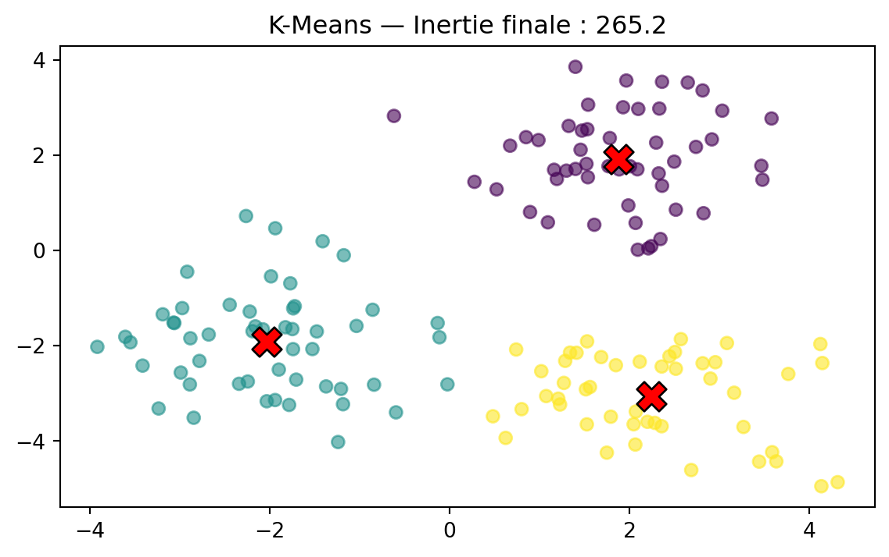
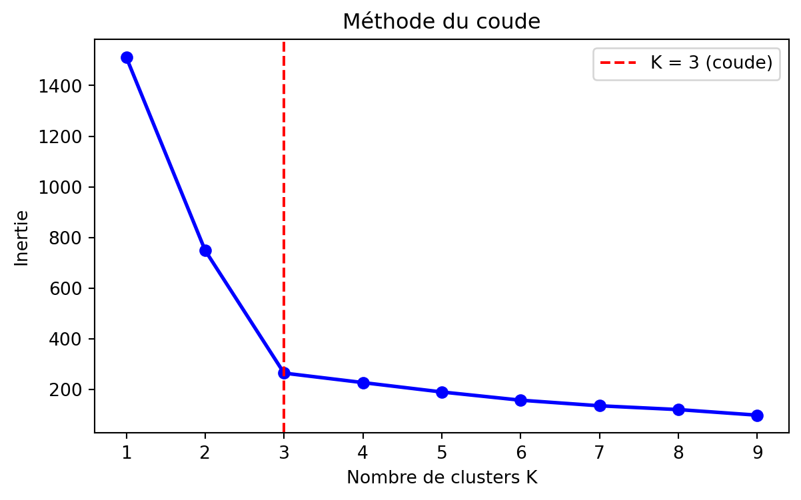

import numpy as np
import matplotlib.pyplot as plt
from sklearn.cluster import KMeans
np.random.seed(42)
X = np.vstack([
np.random.randn(50, 2) + [2, 2],
np.random.randn(50, 2) + [-2, -2],
np.random.randn(50, 2) + [2, -3]
])
km = KMeans(n_clusters=3, random_state=42, n_init=10)
labels = km.fit_predict(X)
plt.figure(figsize=(7, 4))
plt.scatter(X[:, 0], X[:, 1], c=labels, cmap='viridis', alpha=0.6)
plt.scatter(km.cluster_centers_[:, 0], km.cluster_centers_[:, 1],
c='red', marker='X', s=200, edgecolors='black')
plt.title(f"K-Means — Inertie finale : {km.inertia_:.1f}")
plt.show()
Comment choisir K ? La méthode du coude
